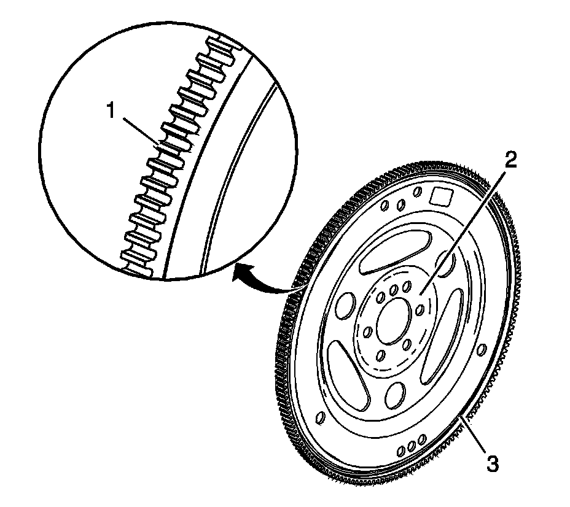

36. Automatic Transmission Flex Plate Cleaning and Inspection
Automatic Transmission Flex Plate Cleaning and Inspection

1. Clean the flex plate in solvent.
Caution: Refer to Safety Glasses and Compressed Air Caution.
2. Dry the flex plate with compressed air.
3. Inspect the flex plate for the following conditions:
^ Damaged ring gear teeth (1)
^ Stress cracks around the flex plate-to-crankshaft bolt hole locations (2)
Important: Do not attempt to repair the welded areas that retain the ring gear to the flex plate. Install a new flex plate.
^ Welded areas (3) that retain the ring gear onto the flex plate for cracking